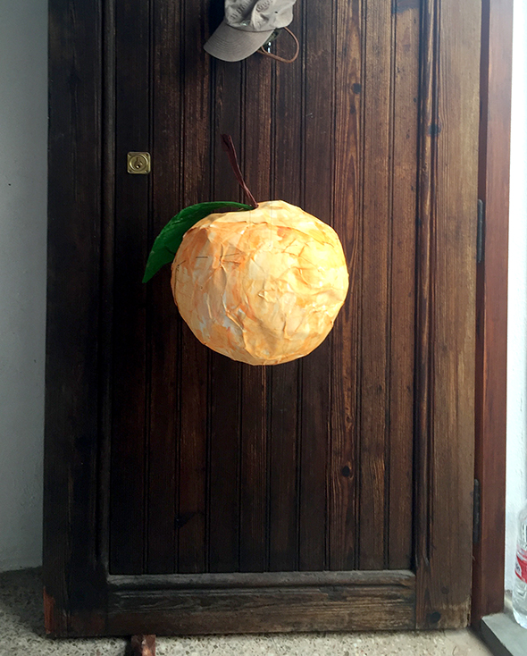
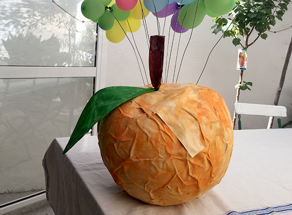

Una piñata de Carolina y Hannah. Queríamos hacer una piña, pero como solo habían globos grandes redondos ha salido una naranja. Hemos usado papel con bastante ramaje para que aguantara muchos golpes.



Una piñata de Carolina y Hannah. Queríamos hacer una piña, pero como solo habían globos grandes redondos ha salido una naranja. Hemos usado papel con bastante ramaje para que aguantara muchos golpes.

Pous en la playa de piedra? SI! Todo es possible en verano. Solo hay que pasear con ojos abiertos.
Leer más →
Con papel de seda y hilos de colores, decoramos nuestras letras iniciales de cartón. Por suerte Noah tiene un nombre corto, porque quiere hacer las OAH…
Leer más →
Los cactus son de piedrecitas negras y fragmentos de vidrio verde que encontramos en la playa. Ahora buscamos macetas (dedal?)
Leer más →

Noah ha montado un monstruo de una caja de cartón. No se que quiere guardar dentro de su boca.
Leer más →
Estos pequeños barcos están mejor como móvil para bebes. Si te lo gusta mas coloreado, se pueden pintar las semillas: como en este post . Los…
Leer más →